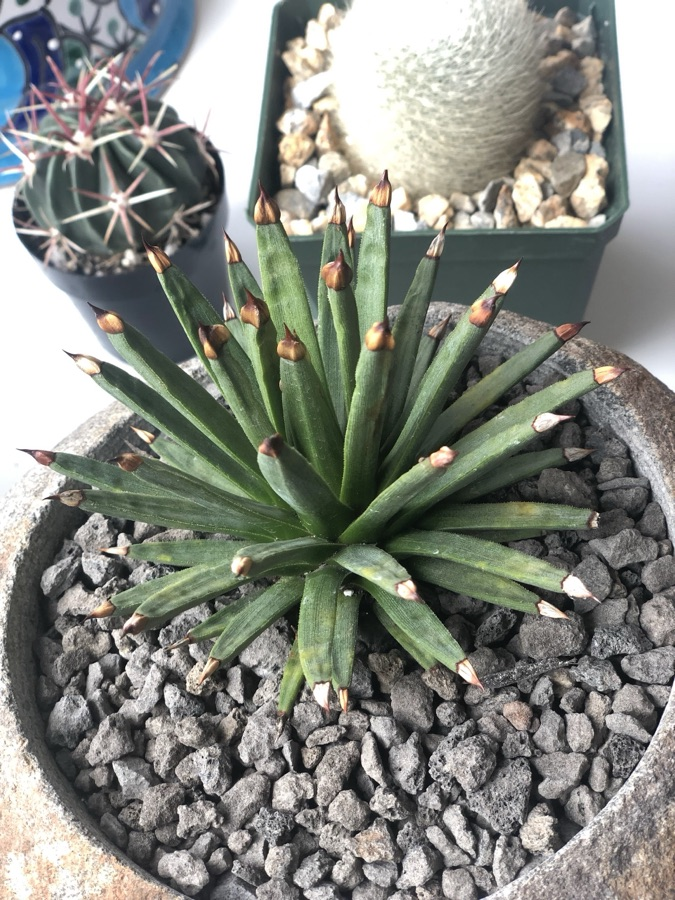

Agave albopilosa
A February birthday gift to myself in 2019. I bought it at Flora Grubb knowing exactly nothing about rare plants, thinking it was beautiful, and spending more than I’d ever spent on a single specimen. It’s the only plant from that entire haul that survived. It’s thriving now.